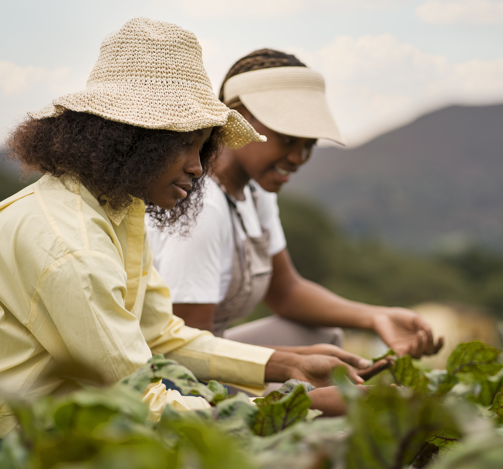
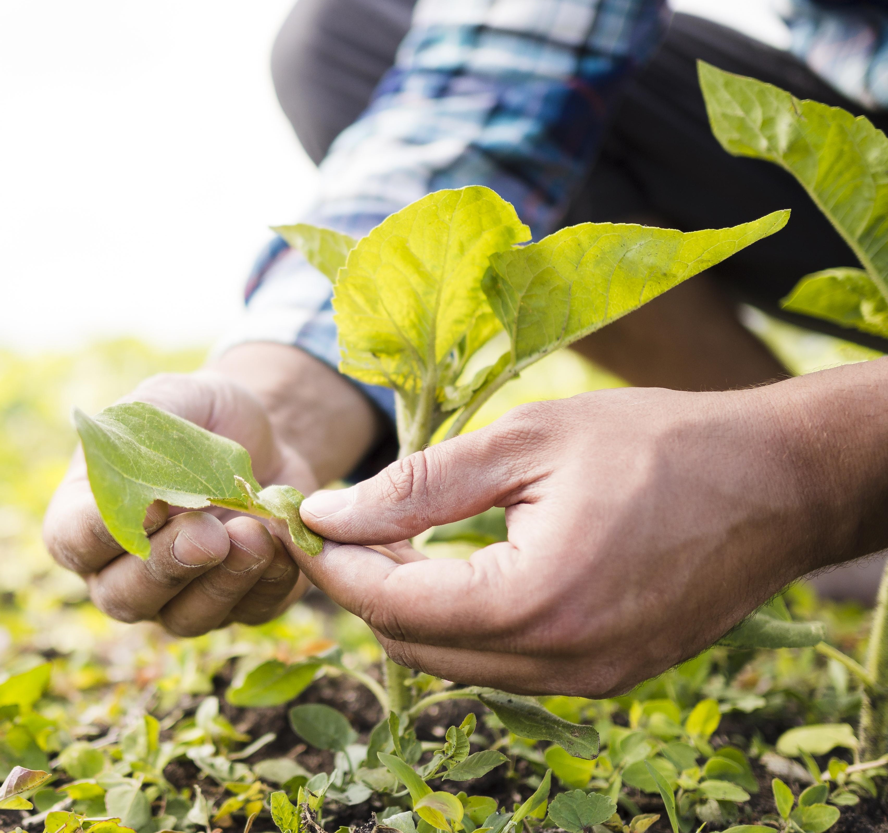

Para obter o selo de produção sustentável, as empresas precisam passar por um processo de avaliação detalhado. Primeiro, é necessário entrar em contato conosco através de e-mail ou telefone, para esclarecer dúvidas e obter informações sobre os requisitos. Após esse contato, a empresa deve enviar um conjunto de documentos, como relatórios de impacto ambiental, certificados de boas práticas e dados sobre o uso de recursos naturais. Esses documentos serão avaliados pela nossa equipe técnica para verificar se as práticas da empresa atendem a os nossos critérios. A equipe realiza uma análise técnica aprofundada, e, se necessário, uma visita à empresa será agendada para verificar as informações de forma mais detalhada. Se a empresa for aprovada, o selo será concedido como um reconhecimento por adotar práticas sustentáveis. A partir desse momento, a empresa poderá usar o selo em seus produtos, embalagens e materiais promocionais, demonstrando seu compromisso com a sustentabilidade. Além disso, nossa ONG realiza monitoramentos periódicos para garantir que a empresa continue atendendo aos padrões exigidos e mantendo suas práticas responsáveis com o meio ambiente.
A primeira etapa do processo consiste no contato inicial com nossa ONG. As empresas interessadas em obter o selo de produção sustentável devem entrar em contato conosco via e-mail ou telefone. Durante esse contato, nossa equipe fornecerá todas as informações necessárias sobre o processo de avaliação, os requisitos para a obtenção do selo e responderá a dúvidas gerais. Este é o momento de esclarecer qualquer questão sobre as práticas sustentáveis exigidas e alinhar as expectativas para o restante do processo.
Após o contato inicial, a empresa deve formalizar a inscrição enviando um conjunto de documentos e informações sobre suas práticas sustentáveis. Isso inclui relatórios de impacto ambiental, certificados de boas práticas, dados sobre o uso de recursos naturais, entre outros. A documentação enviada será cuidadosamente analisada pela nossa equipe técnica para verificar se a empresa atende aos critérios essenciais para a certificação.
Com a documentação recebida, nossa equipe realiza uma avaliação técnica detalhada das práticas sustentáveis da empresa. Isso pode envolver a análise de processos de produção, uso de materiais eco-friendly, estratégias de redução de emissões, entre outros aspectos relacionados à sustentabilidade. Caso necessário, podemos realizar uma visita à empresa para confirmar as informações fornecidas e realizar uma inspeção no local.
Após a avaliação e inspeção, a nossa equipe revisa todas as informações coletadas e determina se a empresa cumpre todos os requisitos para o selo de produção sustentável. Se a empresa for aprovada, o selo será concedido como reconhecimento pelo compromisso com práticas ambientais responsáveis. A empresa passará a ser oficialmente certificada por nossa ONG como uma empresa sustentável.
Após a aprovação, o selo de produção sustentável será emitido e enviado para a empresa certificada. A partir desse momento, a empresa poderá utilizar o selo em seus produtos, embalagens, materiais promocionais e em sua comunicação oficial. O selo é um símbolo de compromisso com a sustentabilidade e serve como uma garantia para os consumidores de que a empresa segue práticas responsáveis com o meio ambiente. Nossa ONG também realiza monitoramentos periódicos para garantir que a empresa continue atendendo aos padrões exigidos e mantenha suas práticas sustentáveis.
Garantimos a qualidade em todos os processos de inspeção realizados, com o compromisso de oferecer resultados precisos e confiáveis. Nossa equipe é altamente capacitada e utiliza equipamentos de última geração para assegurar a detecção de qualquer falha ou inconformidade, atendendo aos mais rigorosos padrões de qualidade e segurança. Cada etapa da inspeção é realizada com atenção aos detalhes e seguindo procedimentos técnicos rigorosos, para garantir que os produtos ou serviços atendam integralmente às expectativas e exigências do mercado. A confiança em nosso trabalho é resultado do nosso comprometimento com a excelência e com a satisfação dos nossos clientes.
Comprometidos com a sustentabilidade, garantimos uma inspeção que respeita e preserva o meio ambiente. Nossos processos são planejados para minimizar impactos ambientais, utilizando práticas e tecnologias que favorecem a eficiência e reduzem o desperdício de recursos. Além disso, priorizamos a utilização de materiais eco-friendly e adotamos soluções que contribuem para a redução da pegada de carbono em todas as fases da inspeção. A sustentabilidade é um valor central em nosso trabalho, e nos esforçamos para assegurar que nossas operações não apenas atendam aos mais altos padrões de qualidade, mas também contribuam para um futuro mais verde e responsável.
